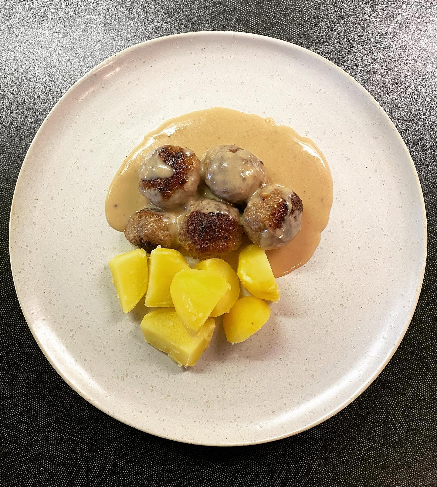

Mleté mäso podľa @cookiteatitloveit — Normy Jedál
Ikea kuličky / koule 😅
500g mleté hovězí a vepřové
90 ml mléka
1 vejce
60 g strouhanky
1 opečená cibule nadrobno nakrájená
Necelá lžička mletého nového koření
Necelá lžička muškátového květu
Větší špetka soli
- ze směsi masa a ostatních ingrediencí ušouláme kuličky, opečeme na pánvi a dáme dodělat na 180 na 10min do trouby. Do výpeku z kuliček dáme kousek másla, dvě lžíce mouky a zalijeme vývarem, přilijeme cca 100 ml smetany a necháme zredukovat. A woalá, Ikea je doma 😂🤗
#ikeakulicky #mletemaso #masovekulicky #omacka #hovezimaso #veprovemaso #mletekulicky #cookiteatitloveit #masovavecere #rychlavecere